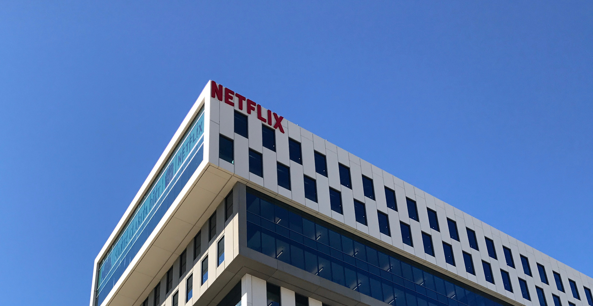

Welcome to our first newsletter of 2017! It's been a while since
the last one, and a lot has happened. We promise to keep them coming
every two months hereafter, and permit ourselves to make this one
rather long. The big news is the beginnings of our launch in the
American market, but there are also interesting updates on sales,
development, mentors and (of course) the investment round that closed
in January.
New capital: The investment round was successful. We raised 2.13
MNOK to match the 2.05 MNOK loan from Innovation Norway. Including the
development agreement with Filmlance International, the total new
capital is 5 MNOK, partly tied to the successful completion of
milestones. All formalities associated with this process are now
finalized.
New owners: We would especially like to
warmly welcome our new owners to the
Drylab family:
Unni Jacobsen, Torstein Jahr, Suzanne Bolstad, Eivind Bergene, Turid Brun, Vigdis Trondsen, Lea Blindheim, Kristine Holmsen, Torstein Hansen, and Jostein Aanensen.
We look forward to working with you!
Sales: Return customer rate is now 80%, proving value and
willingness to pay. Film Factory Montreal is our first customer in
Canada. Lumiere Numeriques have started using us in France. We also
have new customers in Norway, and high-profile users such as Gareth
Unwin, producer of Oscar-winning The King's Speech. Revenue for the
first four months is 200 kNOK, compared to 339 kNOK for all of 2016.
We are working on a partnership to safeguard sales in Norway while
beginning to focus more on the US.
New team members: We've extended our organization with two
permanent developers based in Łódź,
the film capital of Poland. Two
highly skilled interns from the University of Oslo's Entrepreneurship
Program, will be working on market research until mid-June (starting
in March), preparing for the US launch. Also, two computer science students are working as
part-time interns during spring, on machine learning and analysis
research, as well as innovative architectures based on the Swift
language. We hope our interns will consider sticking around!
New mentor: We are honored to have Caitlin Burns joining us
as a mentor. She's an accomplished producer based in New York, an
active member of the Producers Guild of America, and the collaboration
has already yielded good results, including valuable contacts for our
visit in Los Angeles. Oscar-winning VFX supervisor Dave Stump joined
us earlier.
New York, St. Louis, San Francisco and Los Angeles: Pontus and
Audun did a tour of the US in February and March, meeting users,
partners and potential customers. The trip was very successful, with
several high points, including meetings with Netflix, the Academy of
Motion Picture Arts and Sciences, the International Cinematographers
Guild, Local 871 (the script supervisors' union), one of the world's
leading DITs, and Apple. See the separate attachment for a more
detailed summary.
NAB: Andreas and Audun travelled to the National Association
of Broadcasters convention (NAB) in Las Vegas for three hectic days in
April. NAB gathers 100,000 participants from film and TV. It's a very
efficient way of meeting people in the business, and getting an
updated picture of the business landscape. The most exciting meeting
was with PIX System, one of our most important competitors. It was
interesting to note that they regarded the indie market as bigger than
their own.
Andreas was able to secure us an invitation to the DIT-WIT party,
with some of the world's leading DITs in attendance. It was a great
place for informal feedback on Drylab Viewer. The pattern was the same
as for other users: Initial polite interest turns to real enthusiasm
the moment someone is able to personally try Drylab Viewer! We also
met with Pomfort and Apple about our on-going collaborations; ARRI
and Teradek/Paralinx about camera integration; Amazon, Google and IBM about cloud computing.
WWDC and Silicon Valley: We were very pleasantly surprised
to be invited by Apple to their World Wide Developers Conference in
San Jose in June, despite not having applied. It's a valuable chance
to learn and make new connections. We’re also setting aside time to
meet other potential partners.
Cine Gear: We have decided not to attend the Cine Gear expo
in L.A. this year, since feedback from many users about the show were
mixed, and our planned beta version of 3.0 is slightly delayed.
Development and launch: Development is around one month
behind our original schedule. We expect the delay to decrease, with
new developers on board.
The launch of Drylab 3.0 will take place at the International
Broadcasters Convention in Amsterdam in September, and we are working
hard to get solid feedback from pilot users before then.
Annual General Meeting: Drylab's AGM will be held on June
16th at 15:00. An invitation will be distributed to all owners well in
advance. We hope to see you there!
As you can see it has been a hectic spring that has given us a
lot of confirmation about our product. We are now working eagerly and
hard towards the US launch with Drylab 3.0, while keeping momentum in
Europe with our existing system.
[Drylab has kindly allowed this newsletter to be redone in HTML/CSS and converted to PDF with Prince. Navngen helped anonymize names in the process.]